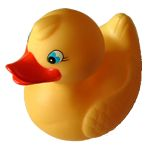

Universidad de las Islas Baleares
 De: La Frikipedia, la enciclopedia extremadamente seria.aUniversidad situada en Palma de Mallorca en la cual hay teorías que apuntan a que sirve para estudiar carreras en las medias. Aquí fue donde se crearon los chicos de la cueva. Su mascota es el pato.
De: La Frikipedia, la enciclopedia extremadamente seria.aUniversidad situada en Palma de Mallorca en la cual hay teorías que apuntan a que sirve para estudiar carreras en las medias. Aquí fue donde se crearon los chicos de la cueva. Su mascota es el pato.
 La mascota, mirandote con sus ojos terroríficos
Historia
Construida en el año catapum chin pum por el profesor Crisis de los Patos, constaba de un solo edificio sin puertas ni ventanas, tras implantar la carrera de arquitectura técnica en un edificio muy moderno prefabricado y "temporal" que sigue hoy en dia pudieron hacerle puertas y incluso se llegó a pensar en realizarle ventanas pero se salía del presupuesto.
Fue invadida por los patos bajo al mando del Magneto logró desterrarlos al lago central usando un hechizo que no les deja salir de la universidad excepto si muere un familiar. Debido al destierro, los patos contactaron con otra tribu nómada: los gatos, quienes han colonizado la universidad.
Debido a las inumerables guerras civiles entre patos y humanos mortales es la única universidad que no ha intentado conquistar el mundo aunque existe una secta llamada Parc bit con la colaboración de Globalia y Orange que lo intentará en nombre de esta.
Mientras los patos se entrenan y planean el asalto final, estos han delegado sobre los gatos la responsabilidad de oprimir a las minorias de la universidad: los estudiantes. Los gatos son ninjas profesionales que permanecen escondidos siempre y cuando no haya ningún tipo de alimento fuera de un tapper, momento en el cual aparecen en manada poniendo caritas. Son varios los estudiantes que han sido devorados al haber hecho una 'yao ming face' cuando los gatos reclamaban la comida. El campamento base de los gatos se encuentra en el bosque junto al edificio ese donde cada dos por tres hay colas para la biomierda o mierdafiesta... ese con las placas solares.
Gobierno
Mandato
La universidad esta bajo la tiranía de un malevolo ser incandescente, lo que pasa es que tambien es un profesor nadie le oye ni le ve y por lógica sus leyes tampoco son aplicadas asi que es la peor tiranía vista jamás porque nadie se entera. A pesar de ser una tiranía se supone que hay elecciones pero los votantes desconocen a quien votan asi que no se puede votar de todas formas.
Economía
Los créditos son la moneda oficial. Para ganarlos hay que simular estudiar y asistir a unos rituales muy duros llamados exámenes en los que la unica manera de aprovar es inventándote la respuesta. Aunque algunos dicen que estudianto tambien se puede como nadie lo ha intentado esto no esta demostrado.
Hay otras formas de ganar créditos haciendo cosas raras e inhumanas como encuestas. El problema es que luego tienes que ir al edificio enlaquintapuñeta que no garantiza que los vayas a recibir.
Hasta ahora se desconocen otros medios para ganarte unos creditillos y poder canjearlos por carreras en las medias.
SPAM
La UIB es pionera en el mundo con la implementación de un maravilloso y exitoso sistema de SPAM, mediante el cual los estudiantes disfrutan de una media de 2.36*10635655*π correos basura al dia en su bandeja de entrada.
Estudios
Estudiar no se estudia pero si que se dan clases durante unos cuantos meses de las catorce estaciones del año.
- La carrera de arquitectura técnica usada para terminar el primer edificio. Son tan pringados que estudian en un edificio de chapa. Estan esperando que alguien logre terminar la carrera y les diseñe un edificio.
- La carreras de informática, aqui fueron creados los chicos de la cueva, exactamente en el aula linux situada en el tercer piso y al que nadie se atreve a ir. El edificio esta inclinado.
- Las carreras de pedagogía, conocidas por la abundancia de guapas mujeres el situar el edificio enfrente del de informática hizo que este se inclinara por el peso de los frikis que se agolpaban en el lateral. Estudian basicamente a tirarse pedos, peda de pedo y gía de aprender.
- La carrera de turismo, se cree que es la mejor facultad de turismo de Europa pero eso no es mas que un mito que herejes como los de la wikipedia extienden. A pesar de su nombre no se viaja tanto como se cree.
- La carrera del mal. Tambien los abogados estudian.
- La carrera del bien. Enfermería tambien hay y esta llena de gente interesante.
- La carrera en la media es la madre de todas las carreras, es la plantilla de las demás carreras, si sabes esta sabes todo.
- Otras carreras. Se puede ampliar pero que mas da si nadie estudia.
Cosas duras
Edificios
Hay muchos edificios, y en algunos hasta ventanas.
- Edificio inclinado de informática, dispone de varios crematorios, aunque en las entradas de los mismos haya un cartelito que dice "Aula de informática".
- Edificio temporal duradero de arquitectura técnica (que ironía que los arquitectos sean los únicos sin un edificio digno).
- Mina de oro (ver deportes).
- Edificio de pedagogía, hecho expresamente para dar envidia a los de informática. Durante una visita cultural informatiquera los exploradores descubrieron en la ¿segunda? planta de este edificio unas mesas que estorbaban el paso, porque estan ahi en medio y los exploradores no consiguieron entender porque. Nunca se les volvió a ver, se dice que fallecieron debido a esta paradoja de diseños interiores nefastos.
- Edificio Ramón Lull, se imparten las clases de historia usando ordenadores que solo tienen acceso a la Frikipedia.
- Bucle espacio temporal del patio de atrás, nada fuera de lo común solo un agujero que es capaz de teletransportar cosas através del espacio y el tiempo, un poco aburrido.
- Edificio enlaquintapuñeta, es un edificio en la quinta puñeta al que tienes que ir a buscar muchas veces los créditos. Se encuentra mas lejos que el Monte del Destino y llegar es mil veces mas dificil, y muchas veces todo es por un mísero credito. Hay gente que le llama Cas Jai pero eso es una herejia.
- Otros edificios marrones y grises, aqui no se sabe que dan pero la descripción lo deja todo claro.
Aulas de informática
Se supone que fueron creadas para hacer trabajos pero al final solo sirven para jugar al Age of Empires y al Counter.
Se dice que existe una mítica aula llamada aula Linux en la tercera planta del edificio de informática pero ahi nadie va porque habitan los chicos de la cueva y el que va no ha vuelto para corroborar su existencia. Son varios los temerarios que en busca de esta aula a veces encuentran una pared donde según el mapa deberia estar la puerta de entrada a este inframundo donde imperan los sistemas operativos minoritarios.
Artefactos varios
La UIB dispone del ordenador mas potente del universo, comprado a la misma raza alienígena que construyó las magdalenas. Es el servidor central de internet y ahi estan todas las webs del mundo. Requiere mantenimiento diario, y gracias a una sincronización perfecta, este mantenimiento siempre coincide con el momento en el que tienes que entregar un ejercicio o una práctica via Campus Extens.
Deportes
Se cree que se pueden practicar deportes pero en realidad el campo de fútbol, la piscina, el padel... no es mas que un engaño para que las universidades enemigas piensen que pierden el tiempo en deporte, en realidad bajo el campo de futbol hay un mina de oro.
Gente supuestamente conocida
Profesores conocidos
Conocer se conocen pocos porque la gente no les escucha ni les mira, pero se sabe que Lock y Ben de Perdidos imparten clase dando redes y estadística respectivamente. Se supone que escaparon unsando redes de pescar y gracias a inumerables operaciones estadísticas lograron calcular como lanzarlas sobre las tortugas y asi escapar de la isla.
Tras varias décadas de arduas negociaciones, la UIB consiguió fichar a Joan Eloi, y cuando algún diseño sale medio feo, es vendido a Spock.
Estudiantes conocidos
Ninguno, aqui hay alumnos pero no gente que estudie.
Aunque si hubiera que adorar a algun alumno (que no estudiante) deberíais adorarme a mi, ¿porque a mi? Porque yo he editado esto y punto. Si no te gusta intenta editarlo pero Chuck Norris te lo impedirá.
Turistas conocidos
El momento álgido de la universidad fue la visita de don Eduard Punset, que durante su visita plantó un pino y fue a la fiesta de disfraces esta que hacen donde hay mucha gente con disfraces de colorines.
Habitantes
Profesores
Se sabe muy poco de estos seres dado que parecen hablar en un idioma desconocido para los alumnos. Les gusta entrar en las clases y encender los proyectores para enseñar grabados primitivos a los que llaman apuntes.
Chicos de la Cueva
Creados en esta universidad en el aula linux, parte de su familia trabaja en un programa llamado Se lo que hicisteis .... En la universidad se los conoce como Bichos y se alimentan de los alumnos que se quedan hasta las 21:30 dando clase. Mas informacion sobre ellos aquí.
Formas de llegar
- En Autobús. (si no te putean los "autobuseros" y no hay huelga de estudiantes)
- En coche. (si no hay huelga de estudiantes)
- En Submarino Metro-politano
- Encima de un wombat.
- Lanzado por una patada de Chuck Norris (muerte segura).
- En paracaídas
Autor(es):
- Guepard
- Bladeruner
- ArreKarallo
- Comentaristainformal
- Diego
- Dancob
- Victroll
- Agente02
- Rubenbiologo
Frikipedia 2005-2016, Licencia
GFDL 1.2 - Extraído por FrikiLeaks